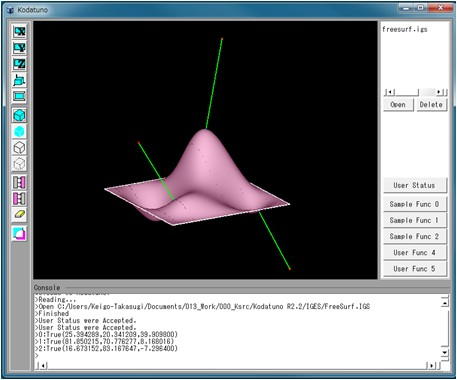

(Ex. 4) 任意の点からのNURBS曲面上の最近傍点を求める
ここからは，NURBS曲面の取り扱いについて解説していきます．
"SampleFunc1.cpp"のSmpNearestPt()を実行します．
＜実行手順＞
- Kodatunoアプリケーションを起動し, 適当なIGESデータを1つ読み込みます．
- 表示されたBodyから面をピックします．ピックする面の数は1個にしてください．
- "User Status"からMode4を選択し，"Sample Func 1"ボタンを押します．
- 選択した面上に最近傍点が生成されたことを確認してください．

＜ソース解説＞
今回はMode4を選択し，"Sample Func1"ボタンを押しました．これによってSmpNearestPt()が実行されます．
では，SmpNearestPt()を見てみましょう．
// Sample4: 任意の点からの曲面上の最近傍点を求める
int SmpNearestPt(BODYList *BodyList,OBJECTList *ObjList, int PickCount, double Prop[])
{
if(!PickCount) return KOD_ERR; // セレクションされていなかったら、何もしない
NURBS_Func nfunc; // NURBSを扱う関数集を呼び出す
NURBSS *S; // セレクションされた曲面へのポインタ
Coord Q,Q_; // 最近傍点格納用
char mes[256]; // メッセージ出力用
double blue[3] = {0,0,1}; // 最近傍点表示の色(青)
double red[3] = {1,0,0}; // コントロールポイント表示の色(赤)
double green[3] = {0,1,0}; // 最近傍点とコントロールポイントをつなぐ線の色(緑)
OBJECT *obj = (OBJECT *)ObjList->getData(0); // 一番最初にセレクションされたエンティティの情報を得る
BODY *body = (BODY *)BodyList->getData(obj->Body); // 一番最初にセレクションされたBODYの実体を得る
// セレクションされた面がトリムされたNURBS曲面か，ただのNURBS曲面か調べ，NURBS曲面のみを取り出す
// KODATUNOでは，IGESファイル読み込みの段階で全ての面/線がNURBS曲面/曲線へとされるため，
// 次のような3つの条件分岐によって欲しい面を取り出すことができる
if(obj->Type == _TRIMMED_SURFACE){
S = body->TrmS[obj->Num].pts; // トリム面の場合は，トリム前の元のNURBS曲面を取り出す
}
else if(obj->Type == _NURBSS){
S = &body->NurbsS[obj->Num]; // ただのNURBS曲面の場合はそのままその曲面へのポインタを得る
}
else{
return KOD_ERR; // セレクションされた曲面がトリム面でもNURBS曲面でもでない場合は終了
}
// 任意の点を3つ用意
Coord P[3];
P[0] = SetCoord(0,0,100);
P[1] = SetCoord(100,50,50);
P[2] = SetCoord(0,100,-50);
// 近傍点を得る
for(int i=0;i<3;i++){
DrawPoint(P[i],1,3,red); // 任意点を描画
int flag = nfunc.CalcIntersecPtNurbsPt(S,P[i],3,0.2,&Q); // 最近傍点算出
if(flag == KOD_TRUE){ // 最近傍点が見つかったら
Q_ = nfunc.CalcNurbsSCoord(S,Q.x,Q.y); // 実空間座標へ変換し保存
DrawPoint(Q_,1,3,blue); // 最近傍点を描画
DrawLine(Q_,P[i],1,green); // 線分描画
sprintf(mes,"%d:True(%lf,%lf,%lf)",i,Q_.x,Q_.y,Q_.z);
GuiIF.SetMessage(mes);
}
else{ // 最近傍点が見つからなかったら
sprintf(mes,"%d:False\n",i); // エラーメッセージをコンソールに出力
GuiIF.SetMessage(mes);
}
}
return KOD_TRUE;
}
今回は約50行とやや長めですが，ほとんどがこれまでの例題で既出のコードですので，難しくはないと思います．
4行目は例によってポカよけです．
6〜12行目では必要な変数の定義を行っています．大半は特に問題ないと思います．
14, 15行目もこれまでと同じです．一番最初にピックしたオブジェクトの情報を取り出し，そのオブジェクトが属するBodyの実体を取得しています．
20〜28行目では，ピックしたオブジェクトが何なのかによって条件分岐をしています．(Ex. 3)ではNURBS曲線を取り出すため，
if(obj->Type == _NURBSC)...というコーディングを行いました．今回はNURBS曲面を同様の操作で取り出すことをします．(Ex. 3)の解説でも書きましたが，
Kodatunoでの面の取り扱いは，11:_NURBSS, 13:_TRIMMED_SURFACEの2つが存在します．トリム面は1.4 Kodatuno内部でのCADデータの構造
で説明したように，やや複雑な階層構造になっていますが，元を辿ればやはり全てNURBS曲線/曲面で表現されています．
現時点ではあまりトリム面の複雑な階層構造のことは考えずに，トリムされたNURBS曲面なのか，トリムされていない素のNURBS曲面なのか，はたまた全く違うもの
を選択してしまったのか，をこの条件分岐によって判定しています．もし，トリムされたNURBS曲面であった場合は，トリムされる前のベースのNURBS曲面を21行目の
操作によって取り出しています．また，トリムされていない素のNURBS曲面の場合は，24行目に示す操作によってピックされたNURBS曲面を取り出すことができます．
31〜34行目では任意の三次元座標値を3つ定義しています．本例ではこの3つの点からの最近傍点を算出します．
37行目より，この3つの点に対し順番に最近傍点を算出していきます．最近傍点の算出は39行目に書かれた，NURBS_Func::CalcIntersecPtNurbsPt()関数によって
行われます．算出に成功すると，Coord Qに最近傍点の座標値が出力されます．ここで注意しなければならないことは，Qには3次元空間座標値(x,y,z)ではなく，
NURBS曲面Sのパラメータ値(u,v)がQ.xおよびQ.yにそれぞれ格納されるということです．よって3次元空間座標値を得たい場合は，41行目に示すNURBS_Func::CalcNurbsSCoord()
関数を実行しなければなりません．この関数は指定した(u,v)パラメータにおける3次元座標値(x,y,z)を返す関数です．
描画は，任意の3点を赤色で(38行目)，S上の最近傍点を青色で(42行目），そしてそれらをつなぐ線分を緑色で(43行目)それぞれ描画しています．
また，最近傍点が見つからなかった場合のエラー処理を47行目以降で行っています．
以上で(Ex. 4)の解説を終了します．次はNURBS曲面に対して，UVパラメータで等間隔に分割した点を生成する例題です．